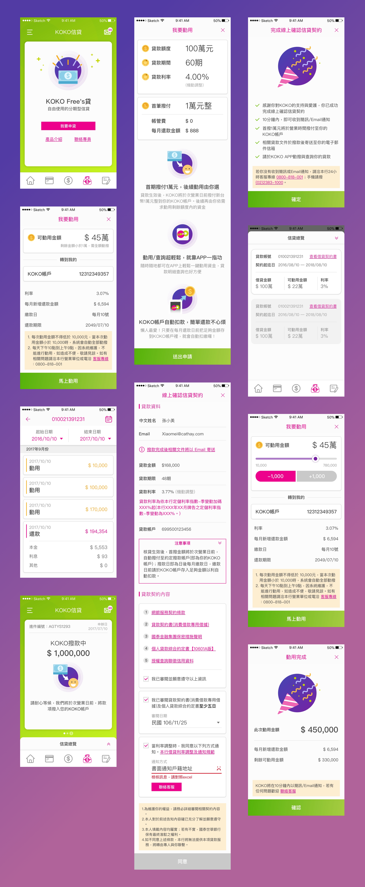

Design the credit loans feature for KOKO.
My role
。 UX Design
Year
2017 - 2018
從2017-2018年間，我在AJA作為一名設計，為國泰打造專屬的數位銀行KOKO，在此次信貸專案中很榮幸我有機會執行下列項目：
- 與客戶討論商業需求與注意事項。
- 設計KOKO信貸整體架構。
- 設計KOKO信貸流程。
KOKO Credit Loans
KOKO借貸是KOKO APP中不可或缺的重要一環，提供用戶以線上App的方式直接借貸，除了不必在透過臨櫃以及電話，大幅提升借貸流程的效率外，用戶也能隨時觀看借貸的進度，並有貼心的還款提醒與流程，降低用戶延遲還款的比例。
金融產品的挑戰在於牽涉到許多法規的限制（條款曝光方式、資訊呈現方式...etc.），身為設計師必須先了解這些限制、客戶的主要策略以及業務邏輯後，在這些條件下打造出貼近目標族群的體驗與流程。
Design Screenshot
